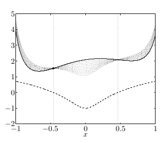
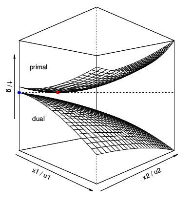
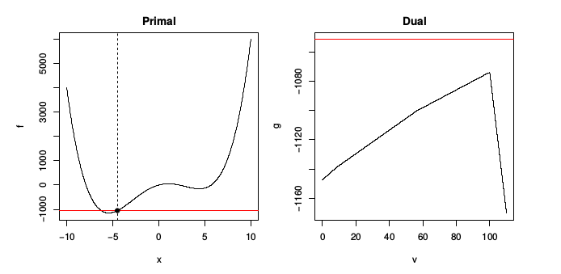

Genel Çifteşlik / İkizlik (General Duality)
Bu derste [1] genel dışbükey problemlerinde ikizlik konusunu göreceğiz, ek olarak dışbükey olmayan durumlara da bakacağız. İkizlik oldukça genel bir konu.
Önceki derste ikizliği elde etmenin ikinci yönteminde
$$ L(x,u,v) \equiv c^T x + u^T (Ax-b) + v^T (Gx-h) $$
tanımı üzerinden (Lagrangian)
$$ f^\ast = \min_{x \in C} L(x,u,v) \ge \min_x L(x,u,v) \equiv g(u,v) $$
şeklinde bir formül elde etmiştik, $u,v$ sabitlendiği durumda ve $x \in C$ olurlu çözümleri kümesi olacak şekilde, ve bu küme üzerinden Lagrangian'ın, tüm $x$'ler üzerinden olan Lagrangian'dan her zaman daha büyük olacağını görmüştük. Aslında bu çok basit bir fikir ama bu basit ve kuvvetli fikir sayesinde ikizliği genel problemlere uygulamak mümkün oluyor.
Ayrıca, sonradan göreceğimiz üzere, en sağdaki eşitsizlik ikiz çözüm $u,v$ noktasına sıkı (tight), yani olurlu kümeyi bir yana atarak bir şey kaybetmiş olmadık. Yani üstte görülen eşitsizlik bazılarına gevşek gelebilir, ama doğru $u,v$'de son derece sıkıdır.
Neyse devam edersek, yine üstte görülen $g(u,v)$ $u,v$'nin bir fonksiyonu ve işin güzel tarafı çoğunlukla hesaplanabilir bir fonksiyon. Yani $L(x,u,v)$'yi $x$ üzeriden minimize etmek $u,v$'nin bir fonksiyonu.
Bir diğer deyişle, $g(u,v)$ fonksiyonu $f^\ast$ üzerinde herhangi bir $u$ ve $v \ge 0$ için bir alt sınır. Ikiz fonksiyonu olarak isimlendirilen $g$.
Lagrangian'ı tekrar düzenleyerek alttakini elde etmiştik,
$$ g(u,v) = \left\{ \begin{array}{ll} -\infty & \text{eğer} \quad c^T + A^Tu + G^T v \ne 0 \\ - b^T u - h^Tu & \text{eğer} \quad c^T + A^Tu + G^T v = 0 \end{array} \right. $$
Şimdi LP'lerden ilerleyip, düşünebildiğimiz en genel optimizasyon formuna bakacağız. Dişbükey (convex) olması şart değil ama tabii ki dışbükey durumlara özel ilgi göstereceğiz. Form,
$$ \min_{x} f(x), \quad \textrm{öyle ki} $$ $$ h_i(x) \le 0, \quad i=1,..,m $$ $$ l_j(x) \le 0, \quad j=1,..,r $$
Eğer sadece dışbükeylige bakıyor olsaydık $f,h_i$'lerin dışbükey, $l_i$'lerin ise doğrusal olması gerekirdi. Lagrangian'i tanımlayalım, hala çok genel bir şekilde yaklaşıyoruz tabii,
$$ L(x,u,v) = f(x) + \sum_{i=1}^{m} u_i h_i(x) + \sum_{i=1}^{r} v_i l_i(x) $$
Eşitlik ve eşitsizlik kritlerini ikiz değişkenler ile çarpıp topluyoruz, ve hedefe ekliyoruz. Daha önce olduğu gibi eşitlik kısıtlamarını çarpan $u_i$'lar sıfır olmamalı çünkü $f(x)$ ile Lagrangian arasında bir ilişki kuracağız, ve ana problemdeki eşitsizlin işaret değiştirmesini istemiyoruz.
Bu arada "ikiz değişkenler" kelimesi duruma göre bazen "Lagrange çarpanı" olarak görülebilir.
Önemli özellik, her $v$ ve $u \ge 0$ için, her olurlu $x$ noktasında
$$ f(x) \ge L(x,u,v) $$
Niye? Daha önce LP'lerle gördüğümüz fikirle aynı durum, olurlu noktalarda
$$ L(x,u,v) = f(x) + \sum_{i=1}^{m} u_i \underbrace{h_i(x)}{\le 0} + \sum{i=1}^{r} v_i \underbrace{l_i(x)}_{=0} $$
Olurlu noktalarda $l_i$'ler sıfır, o zaman tüm $l_i$'leri toplamı yokolur, $u_i$'lerin hepsi sıfırdan büyük olmalı ve olurlu noktada $h_i$'ler sıfırdan küçük, pozitif çarpı negatif eşittir negatif, toplam negatif, $f(x)$'den bir değer eksiltilmiş olacaktır, bu da muhakkak $f(x)$'den küçük bir sonuca sebep olacaktır, iki üstteki bu şekilde ispatlanmış olur.
Üstteki fonksiyonu, parçalarını grafiksel olarak alttaki gibi görebiliriz,

Kesiksiz çizgi kriter / hedef fonksiyonu örnek bir $f$. Dikkat edersek görülen $f$ dışbükey değil, bunu genel dışbükey olmayan ortamlarda da tekniğin işlediğini göstermek için yaptık.
Noktalı eğrilerin her biri farklı $u$'lar için $L$'nin değerleri, ayrıca olurlu kümeyi $[-0.46,0.46]$ arasında olacak şekilde seçtik. Yani
$$ \min_{x} f(x), \quad \textrm{öyle ki} $$ $$ h_i(x) \le 0 $$
programını ele almış olduk, noktalalı eğriler ile çizilen ise
$$ L(x,u) = f(x) + u l(x) $$
Devam edersek belli bir $f^\ast$ minimumu düşünelim,
$$ f^\ast \ge \min_{x \in C} L(x,u,v) \ge \min_x L(x,u,v) \equiv g(u,v) $$
LP örneğindeki yaklaşım, sadece olurlu küme $C$ yerine tüm $x$'ler üzerinden minimizasiyon bir alt sınır oluşturur. $g(u,v)$'ye ikiz fonksiyon diyoruz.
Peki niye $g(u,v)$ tanımını $\min_{x \in C} L(x,u,v)$ için yapmadım, tüm $x$'ler üzerinden olan kısıtlanmamış versiyon için yaptım? Çünkü tüm $x$'ler üzerinden olan tanım bizim için daha faydalı. O tür ifadeler üzerinde analitik çözüm geliştirmek daha rahattır, analitik çözüm olmasa bile tüm $x$'ler üzerinden yaklaşım daha faydalı. Tabii hala bazı kısıtlamalar var, mesela $u \ge 0$ olmalı.
İkiz fonksiyon $g$'nin $\lambda$'ya (aslında $u$) gore bir grafiğini altta görüyoruz,

Kesikli çizgi kriter, ve $g$ her $\lambda$ için kriterin hep altında.
Peki niye ikizi yapabildiğim en büyük değer kriterin olurlu kümede olabilecek en ufak değerine eşit değil (ikizin tepesi kesikli çizgiye değmiyor)? Çünkü elimizdeki bir dışbükey olmayan fonksiyon. Dişbükeylik olsaydı alt sınır sıkı olurdu. Dışbükey olmayan fonksiyonlarda da sıkılık görülebilir ama dışbükeylik durumundaki gibi bu şart değildir.
Biraz daha zor bir örneğe bakalım.
Standart formda bir karesel program (QP).
$$ \min_x \frac{1}{2} x^T Q x + c^T x \quad \textrm{öyle ki} $$ $$ Ax = b, \quad x \ge 0 $$
ki $Q$ pozitif kesin, $Q \succ 0$ olarak gösterilir, en küçük özdeğeri harfiyen sıfırdan büyük (yani $>0$, $\ge 0$ değil), bu durumda üstteki problem harfiyen dışbükey olur.
Lagrangian için öğrendiğimiz tarifi uygularsak,
$$ L(x,u,v) = \frac{1}{2} x^T Q x + c^Tx - u^T x + v^T (Ax - b) \qquad (2) $$
İkiz fonksiyonu bulalım şimdi. $x$, üzerinden minimizasyon yapılan değişken olacağı için $g$'de olmayacak, yani
$$ g(u,v) = \min_x L(x,u,v) $$
$x$'ler üzerinden ufak bir gruplama sonrası
$$
= \min_x \frac{1}{2} x^T Q x + (c - u + A^T v)^T x - b^T v
\qquad (1)
$$
Bu minimumu nasıl buluruz? Gradyanı alıp sıfıra eşitleriz değil mi? Tabii üstteki tanıdık bir formda, eğer tek boyuttan hatırlarsak,
$$ ax^2 + bx + c $$
formülü olsaydı, çözüm $x^\ast = \frac{-b}{2a}$ olurdu. Çok boyutlu vektörel formda
$$ \frac{1}{2} x^T Q x + b^T x $$
için çözüm $x^\ast = -Q^{-1} b$. Bunu biliyorum çünkü pek çok kez bu çözümü türettim, hatırlıyorum. Bu formu bizim probleme uygularsak, (1) içindeki parantezde görülen $c - u + A^T v$ kısmı üstteki $b$ oluyor. O zaman Lagrangian'ın minimize edicisi
$$ x^\ast = -Q^{-1} (c - u + A^T v) $$
O zaman Lagrangian'ın minimum noktası üstteki minimize ediciyi formüle geri sokunca elde edeceğim şey
$$ \min_x L(x,u,v) = L(x^\ast,u,v) $$
$$ = \frac{1}{2} (c - u + A^Tv)^T Q^{-1} (c - u + A^Tv) - (c - u + A^Tv)^T Q^{-1} (c - u + A^Tv) - b^T v $$
Geriye tek $Q^{-1} $ kaldı çünkü (2)'ye $x^\ast$'i soktuğumuz zaman $Q$ ile çarpılan ilk $Q^{-1} $ iptal oldu, ikincisi geriye kaldı, basitleştirince Lagrange ikiz fonksiyonu elde ediyoruz,
$$ g(u,v) = -\frac{1}{2} (c - u + A^Tv)^T Q^{-1} (c - u + A^Tv) - b^Tv \qquad (3) $$
Yani bana verilen her $u \ge 0$ ve herhangi $v$ için hesaplayacağım üstteki formül, bana karesel programın optimumu için bir alt sınır veriyor.
Hiç te önemsiz olmayan bir sonuç, ama bu noktaya son derece önemsiz (gibi gözüken), gayet basit ifadeleri bir araya koyarak geldik. Ama karesel program için elde ettiğimiz sonuca bakın. Başta gördüğümüz genel form bir QP. (3)'un bu QP'nin optimal değeri için bir alt sınır oluşturacağı ilk bakışta bariz gibi durmuyor. Ama bu böyle, ve Lagrangian ikiz fonksiyonun bir özelliğinin sonucu bizi buraya getiriyor, birkaç satırlık ifadeyle üstteki kuvvetli sonucu doğrulayabiliyoruz.
Farklı bir varyasyona bakalım şimdi, ya $Q \succeq 0$ olsaydı, yani $Q$ pozitif yarı kesin olsaydı?
Bu durumda yine Lagrangian'in gradyanını alıp sıfıra eşitlerdik, vs. ve
$$ Qx = -(c-u+A^Tv) \qquad (4) $$
elde ederdik, fakat $Q$'nun tersini alıp $x$'i elde edemezdik çünkü $Q$ pozitif kesin değil.
Çözüm için iki şartı gözönüne almak lazım,
1) $c-u+A^T v \in col(Q)$ ki $col(Q)$ $Q$'nun kolon uzayı demek, yani (4) lineer ifadesini tatmin eden bir $x$ var. Bu durumda $x^\ast$
$$ x^\ast = -Q^{+}(c-u+A^Tv) $$
olarak yazılabilir, ki $^+$ işareti genelleştirilmiş ters (generalized inverse) demek. Bu işleme bazen sözde ters (pseudo inverse) ismi de veriliyor, ve çoğunlukla eşsiz değer ayrıştırması (singular value decomposition) üzerinden tanımlanıyor. Ama $Q$ simetrik olduğu için onun öz ayrıştırmasını (eigen decomposition) yazsam da olur herhalde, $Q$'yu şu sekilde yazsaydım,
$$ Q = U D U^T $$
Eğer $Q$ pozitif yarı kesin ise o zaman $D$ içinde bazı değerlerin sıfır olması mümkün, yani şunun gibi bir durum olabilir,
$$ = U \left[\begin{array}{ccccc} d_1 & & & & \\ & \ddots & & & \\ & & d_r & & \\ & & & 0 & \\ & & & & 0 \end{array}\right] U^T $$
$Q^+$ sözde tersini tanımlamanın bir yolu üstteki öz ayrıştırma üzerindendir (dikdörtgensel matrisler için SVD üzerinden).
Ama ondan önce bir soru, eğer tüm değerleri sıfır olmayan bir $D$ üzerinden bir öz ayrıştırmam olsaydı? Basit, $U D^{-1} U^T$ değil mi? Unutmayalım $U$ matrisi dikgen.
Ama pozitif yarı kesinlik var, o yüzden $D$'nin tersini alamıyorum. Bu sebeple sözde ters işlemi $D$ içindeki tersi alınabilen değerlerin tersini alıp diğerlerini olduğu gibi bırakmak üzerinden tanımlanmıştır.
$$ Q^+ = U \left[\begin{array}{ccccc} 1/d_1 & & & & \\ & \ddots & & & \\ & & 1/d_r & & \\ & & & 0 & \\ & & & & 0 \end{array}\right] U^T $$
Üsttekine bazen "Moore-Penrose sözde tersi" ismi verildiğini de duyabilirsiniz, aslında pek çok farklı sözde ters yöntemleri var, ama standart olan üstteki.
Yani bu durumda $c-u+A^T v$'nin içinde $Q$'nun kolon uzayında olmayan bazı öğeleri var, yani bu bazı öğeler $col(Q)$'a dikgen olan bir uzaydalar, sıfır (null) uzayındalar. $Q$ simetrik olduğu için kolon uzayıyla sıfır uzayı birbirini dikgen tamamlıyor.
$$ c-u+A^T v \perp null(Q) $$
2) Bu durumda üstteki sıfır uzayıyla olan dikgenlik doğru değil. O zaman ne olur? O durumda (4)'ün çözümü yoktur. O zaman (1)'ın minimizasyonuna ne olacak? (1)'i istediğimiz kadar ufak yapabiliriz, yani $-\infty$'a kadar gidebiliriz. Çünkü düşünürsek sıfır uzayında olan $x$ seçeneği (1)'in ilk terimini sıfır yapar, ama ikinci terimi istediğimiz yöne çekebiliriz, ta ki $-\infty$ olana kadar.
$$ g(u,v) = \left\{ \begin{array}{ll} -\frac{1}{2} (c - u + A^Tv)^T Q^{-1} (c - u + A^Tv) - b^Tv & \textrm{eğer } c - u + A^Tv \perp null(Q)\\ -\infty & \textrm{eğer tersi doğruysa} \end{array} \right. $$
Şimdi geri bir adım atıp her şeye bakalım. Elimizde bir QP varsa Lagrange ikiz fonksiyon da karesel, o zaman Lagrange ikizi maksimize etmek hala bir QP. Yani QP'lerin ikizleri yine QP.
Biraz önce gördüğümüz QP örneğinde Lagrange ikiz karesel, ama tanım kümesinde (domain) bir kısıtlama var, üstteki $g(u,v)$'de görüyoruz. Fakat bu tanım kümesi kısıtlamasını bir QP kısıtlamasına çevirebiliriz, spesifik olarak $u,v$ üzerinde bir eşitlik kısıtlamasına. $null(Q)$'ya dikgen olmak demek $Q$'nun sıfır uzayına olan yansıtma matrisini, $P$ diyelim, alıp $c - u + A^Tv$ ile çarparsam sıfır sonucunu almalıyım. Bunu eşitlik kısıtlaması olarak kodlayabilirim. Tabii bu tür bir eşitlik kısıtlaması eklemek ikiz problemi daha çetrefil hale getirecektir.
Bir diğer örneğe bakalım. Bu çok daha basit bir karesel program, iki boyutlu.
$$ \min_{x \in (x_1,x_2)} f(x) = \frac{1}{2} x^T Q x b^T x \quad \textrm{öyle ki} $$ $$ x \ge 0 $$
İkiz fonksiyon
$$ g(u) = \min_x \frac{1}{2} x^T Q x + b^T x - u^T x $$
ki $u = (u_1,u_2)$
Ana problem karesel, ikiz de karesel. Problemleri grafik olarak görelim, hem ana (primal) hem de ikiz (dual) aynı grafikte olacak şekilde,

İkizin nasıl gözükeceğini daha önceki örneklerden tahmin edebilirdik, (3) formülünde eksi işareti var, ikiz bir içbükey yüzey olacak.
İlginç bir şey görüyoruz, ana problemin en küçük olduğu nokta ikizin en büyük olduğu noktada. Üstteki sistem sıkı olacak gibi duruyor, eğer üstteki $g(u)$'yu maksimize etmek bana $f^\ast$'i geri verecek. Bu durumun bu örneğe özel olmadığını belirtmek isterim, dışbükey problemlerde sık sık olan bir şey bu.
Bir diğer ilginç durum, ikiz çözümün nerede olduğu, yani $u_1,u_2$'den bahsediyorum, kriterden değil. Kriter çözüm noktasında ana ve ikizde uymalı. İkiz çözüm $(0,0)$'da. Ana çözüm, resimden pek belli olmuyor ama $x_1,x_2$ kordinat sisteminin içlerine doğru bir yerlerde yani her ikisi de harfiyen pozitif. Bu bir raslantı mı? Yani $x_1,x_2$ harfiyen pozitif ise (yani $>0$) ikizin sıfır olma durumu?
Değil. Burada olan birbirini tamamlayan serbestlik (complementary slackness) durumu. Bu kavramı Karush-Kuhn-Tucker (KKT) şartlarını işlediğimizde öğreneceğiz. Eğer problemde gördüğümüz sınırlamaların herhangi biri çözüm noktasında sıkı değilse ona tekabül eden ikiz değişken sıfır olmalı. Bu olması gereken bir fenomen ve ispatını da yapacağız. Üstteki örnekte her iki şart da çözümde sıkı değil, $x$ her iki kordinatta da sıfırdan büyük, bu her iki ikiz değişkeni çözümde sıfır olmaya zorluyor.
Tekrar üzerinden geçersek, bir ana problem,
$$ \min_x f(x) \quad \textrm{öyle ki} $$ $$ h_i(x) \le 0, \quad i=1,..,m $$ $$ l_j(x) = 0, \quad j=1,..,r $$
için bir ikiz $g(u,v)$ oluşturabiliriz ki her zaman $f^\ast \ge g(u,v)$ olacaktır her $u \ge 0$ ve $v$ için. O zaman en iyi alt sınır $g(u,v)$'yi tüm olurlu $u,v$'ler üzerinden maksimize ederek elde edilir. Bu bize Lagrange ikizi problemi verir,
$$ \max_{u,v} g(u,v) \quad \textrm{öyle ki} $$ $$ u \ge 0 $$
Önemli bir özellik zayıf ikizlik durumu, eğer ikizin optimal değerine $g^\ast$ dersek $f^\ast \ge g^\ast$.
Üstteki ilişki ana problem dışbükey olmasa bile işliyor. Yani elimizde müthiş dışbükey olmayan çok zor bir optimizasyon problemi olabilir, ama onun ikizini oluşturursak bu yeni problemin optimal değeri her zaman ana problem için bir alt sınır oluşturuyor. Bazen bu optimal değerin kendisi bile faydalı, belki kriter fonksiyonun kendisi mesela bir ekonomik bedel, bir yol miktarı, vs gibi bir şeyi temsil ediyor ve ona iyi bir alt sınır bulmak bile bize önemli bir bilgi veriyor.
Şimdi sıkı durun, dahası da var. Birazdan bahsedeceğim şey ilk duyanları
çok şaşırtıyor. İkiz problem her zaman bir içbükey / dışbükey
optimizasyon problemi. Bu önemli çünkü dışbükey programları bir şekilde
muhakkak sayısal olarak çözebiliyoruz, cvx paketi ile belki, ya da
altgradyan (subgradient) metotlarıyla.. bir şekilde bu olur. Bilimin
vardığı nokta burası, o problem çözüldü. Bu çok iyi çünkü eğer ana problem
minimizasyon problemi ise ikiz her zaman içbükey maksimizasyon, ya da diğer
yönde ana problem maksimizasyon ise ikiz dışbükey minimizasyon, ve içbükey
/ dışbükey problemi çözebiliyoruz. Bu her zaman doğru, ana problem ne
olursa olsun.
Niye? İspatını yapacağız, ana maksimizasyondan başlayarak $g$'nin her zaman bir içbükey fonksiyon olduğunu ispatlayacağız. Bu ispat çok basit aslında. Tanım itibariyle,
$$ g(u,v) = \min_x \left\{ f(x) + \sum_{i=1}^{m} u_i h_i(x) + \sum_{i=1}^{r} v_i l_i(x) \right\} $$
Her şeyi eksi ile çarparsak üsttekini bir maksimizasyona çevirebiliriz,
$$ = -\max_x \left\{ -f(x) - \sum_{i=1}^{m} u_i h_i(x) - \sum_{i=1}^{r} v_i l_i(x) \right\} $$
Şimdi $\max$ başındaki eksiye bakmadan geri kalanlara bakalım. $u,v$ üzerinden düşünürsek üstte çarpımlar ve toplamlar var. $u,v$ açısından $f(x)$ bile bir sabitin toplamı demektir. Çarpım toplamlar doğrusal fonksiyondur, doğrusal fonksiyonlar ise dışbükeydir. Şimdi $\max$ basındaki eksiyi de hesaba katarsak dışbükey içbükey olur (ama hala aynı familyadayız). Yani ikizde elimizde kesinlikle bir içbükey problem olmalı.
Fakat genel uygulamalarda önümüze bazı engeller çıkabiliyor. Mesela Lagrangian'ın kendisinin hesabı oldukca çetrefil olabilir. Eğer ana problem dışbükey ise Lagrangian hesabı kolay ama çetrefil $f(x)$'ler için bu iş daha zor. Yani dışbükey olmayan ana problemin şanslıysak ikiz hesabı kolaydır, ama çoğunlukla iş zor.
Altta bir örnek seçtim, öyle ki ikiz hesaplanabilir halde olacak, her ne kadar ana problem olmasa da.
$$ \max f(x) = x^4 - 50x^2 + 100x, \quad \textrm{öyle ki} \quad x \ge -4.5 $$
Problemin grafigi altta

Sol grafikteki koyu siyah nokta ikizdeki maksimuma tekabül eden nokta, gerçek minimum değil, o minimum biraz daha sola doğru. Sağdaki ikiz grafiğini hesapladım, $u$ yok tabii çünkü eşitlik kısıtlaması yok. İkizin içbükey olduğuna dikkat. Ana problem dışbükey değil, ama ikiz içbükey.
Ayrıca ikiz aşağı yukarı "parçalı lineer" denebilecek bir halde, ki bu durum da ana problem dışbükey olmadığında yaygın şekilde görülen bir durum.
Bu arada eğer $g$'yi cebirsel olarak türetirsek, oldukca çetrefil bir form elde edeceğimizi görebiliriz [türetim atlandı, burada benim notum, içbükey bir problemi pür sayısal olarak çözmenin nasıl olsa mümkün olacağı].
Güçlü İkizlik
Daha önce $f^\ast \ge g^\ast$ olması gerektiğini gördük. Fakat pek çok problemde
$$ f^\ast = g^\ast $$
olduğunu da gördük. Yani ana ve ikiz problem arasında hiç boşluk yok. Buna güçlü ikizlik ismi veriliyor. Hatta bu durum neredeyse her dışbükey optimizasyon probleminde ortaya çıkıyor. Neredeyse dedik çünkü Slater şartı denen bir şart da lazım bu şarta göre eğer olurlu kümede tüm eşitlik tüm eşitsizlik şartlarını harfiyen yerine getiren en az bir nokta varsa o zaman güçlü ikizlik var. Harfiyen derken tüm eşitlik şartları sıfıra eşit, tüm eşitsizlikler sıfırdan küçük olmalı.
Çoğunlukla bu çok, çok zayıf bir şart, yani yerine getirmesi çok kolay. Yani ana problemin dışbükey olup da Slater şartına uymaması çok nadirdir, eğer ana problemde çok absürt şartların olması lazım.
Slater şartının LP'ler için anlamı nedir? LP'ler zaten doğal olarak dışbükeydir, ama onlar için zaten tüm şartlar doğrusal olduğu için LP olurlu ise otomatik olarak güçlü ikizlik vardır [gerisi atlandı]
İkizlik Boşluğu (Duality Gap)
Bir basit kavrama daha değinelim. Basit ama çok faydalı olabilir, mesela ana ve ikizi optimize etmek içi bir özyineli algoritma geliştiriyorsunuz, ve bir olurlu $x$'imiz ve olurlu $u,v$'miz var ise,
$$ f(x) - g(u,v) $$
büyüklüğünü hesaplayabiliriz. Bu niye faydalı? Çünkü ikizlik boşluğu her zaman $f(x)$'in optimale yakınlığına bir üst sınır oluşturur,
$$ f(x) - f^\ast \le f(x) - g(u,v) \qquad (5) $$
Nasıl türetildi? $g(u,v) \le f^\ast$ olduğunu biliyoruz, ya da $-g(u,v) \ge -f^\ast$. Sonra $f(x)=f(x)$ ile başlayarak bir tarafa $-f^\ast$ diğerine $-g(u,v)$ ekleriz, üstteki eşitsizliği elde ederiz.
O zaman ana ve ikizi optimize etmek içi bir özyineli algoritma geliştirirken "optimal kritere ne kadar yakınım?" diye merak ediyorsak, (5) hesabını yaparsak o değerden daha uzak olamayacağımızı biliriz. Eğer 0.001 almışsak, 0.001'dan uzak olamayız. Tabii aynı argüman ikiz kriteri için de geçerli, ondan da 0.001'den daha uzakta olamayız, $g^\ast-g(u,v)$ aynı şekilde sınırlanmıştır.
Bu kavramları özyineli algoritmada bir durma şartı olarak kullanabiliriz. Eğer $f(x) - g(u,v) < \epsilon$ ise $f(x) - f^\ast < \epsilon$ olması garantidir, geldiğimiz nokta bir "$\epsilon$ alt optimalliktir", ya da bir "$\epsilon$ alt optimal sonucu" elde etmişizdir.
Bu kavram KKT şartlarına gelince de faydalı olacak.
Kaynaklar
[1] Tibshirani, Convex Optimization, Lecture Video 11, https://www.youtube.com/channel/UCIvaLZcfz3ikJ1cD-zMpIXg